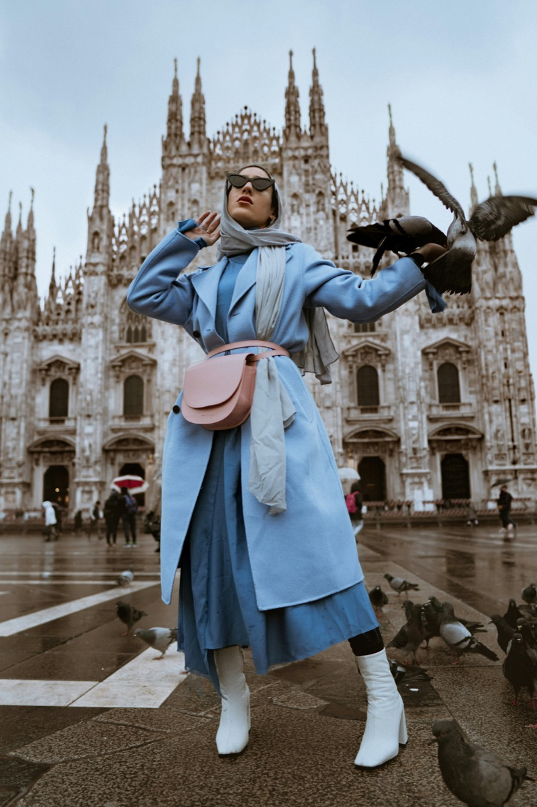

Wear the unexpected.
A study in colour, silhouette and everyday movement.
Explore collections ↘
Collections
View all ↗
The colour edit
Pair saturated separates with a quieter base to build a versatile outfit.
Read more ↗
Soft structure
Discover tailored shapes with relaxed proportions and room to move.
Read more ↗Off-duty layers
Light outer layers and easy silhouettes for the transition between seasons.
Read more ↗Shop the edit by mood
The colour edit
Choose a dominant shade, then add a second tone through a smaller accessory. Compare the combination by a window before deciding.
Explore the colour edit ↗Soft structure
Look at how a seam sits when you lift an arm or take a seat. The shoulder line and fabric weight change how structured a piece feels.
Explore soft structure ↗Off-duty layers
Try your outer layer over the fullest sleeve you own. A hem that clears the next layer keeps the outline legible when the outfit moves.
Explore off-duty layers ↗Turn the shoulder bag
Drag the model to inspect its form, or use the rotation buttons.
Building a three-piece edit
Start with the garment you reach for most. A small wardrobe feels more varied when the surrounding pieces change its shape, texture or colour rather than duplicating it.
Choose a dominant shade, then add a second tone through a smaller accessory. Compare the combination by a window before deciding.
About Muse Market →A wardrobe in motion
The colour edit
Choose a dominant shade, then add a second tone through a smaller accessory. Compare the combination by a window before deciding.
Explore the colour edit →Soft structure
Look at how a seam sits when you lift an arm or take a seat. The shoulder line and fabric weight change how structured a piece feels.
Explore soft structure →Off-duty layers
Try your outer layer over the fullest sleeve you own. A hem that clears the next layer keeps the outline legible when the outfit moves.
Explore off-duty layers →Wardrobe edit
Choose a focus and download your notes as a text file.